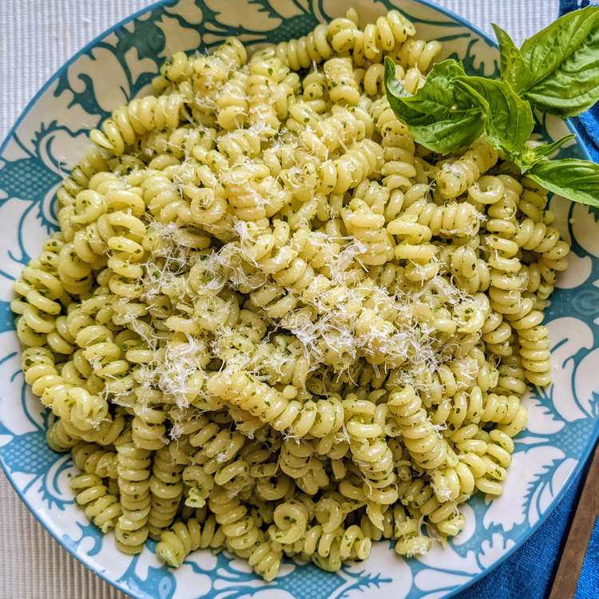

Pesto Pasta

Description
A recipe to make a pasta dish that is not only easy, but tasty too!
Ingredients
- 1 (16 ounce) package of pasta
- 2 tablespoons of olive oil
- 1/2 cup of chopped onion
- 2 1/2 tablespoons of pesto
- Salt to taste
- Ground black pepper to taste
- 2 tablespoons of grated Parmesan cheese
Directions
- Fill a large pot with lightly salted water and bring to a rolling boil.
- Stir in pasta and return to a boil. Cook pasta uncovered, stirring occasionally, until tender yet firm to the bite, about 8 to 10 minutes.
- Drain and transfer into a large bowl.
- Meanwhile, heat oil in a frying pan over medium-low heat. Add onion; cook and stir until softened, about 3 minutes. Stir in pesto, salt, and pepper until warmed through.
- Add pesto mixture to hot pasta; stir in grated cheese and toss well to coat.